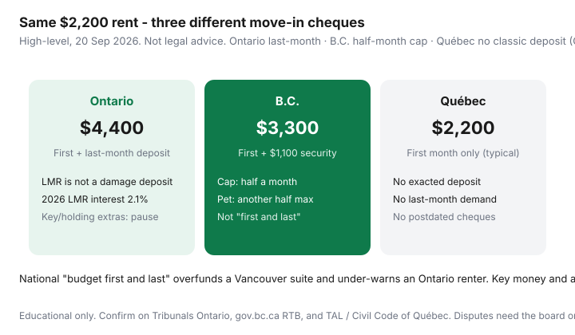

Housing · Canada
First and last month rent in Canada: what Ontario, B.C., and Québec actually allow
Canadians budget “first and last” because Ontario listings taught the country that phrase. Then they move to Burnaby and overpay a deposit the Residential Tenancy Branch caps at half a month, or they land in Montréal and learn that a classic damage deposit is something a lessor generally may not exact. The cash-flow error is national. The statutes are not.
This is a move-in planner for Ontario, B.C., and Québec. It is not legal advice, not a ruling on your lease, and not a reason to stay in an unsafe unit to win an argument.
Disclosure: There is no natural affiliate product in a deposit-rules explainer. Saving Optimizer does not claim LTB, RTB, TAL, clinic, or landlord-software partnerships. If you need advice on a dispute, use the provincial board or a licensed advisor.
Key takeaways
- Ontario: last-month rent deposit is the usual lawful security category — not a damage slush fund. 2026 LMR interest tracks the 2.1% guideline.
- B.C.: security deposit ≤ half of the first month’s rent; optional pet damage deposit ≤ another half. “First and last” is the wrong mental model.
- Québec: Civil Code art. 1904 / TAL — a lessor may not exact more than the first period’s rent or extra money as a deposit, and may not demand postdated cheques.
- Application fees, key money, and “holding” e-transfers are a refuse in all three. Push back with a citation, not a speech.
- If you already overpaid, write first, then the provincial board path (Ontario T1 themes; B.C. withholding/RTB; Québec TAL).
Ontario: last-month rent deposit rules and interest basics
At a high level, the Residential Tenancies Act lets a landlord collect a rent deposit for the last rental period — one month if you pay monthly — not a general damage holdback. Damage you cause can still be a claim; that is not a licence to collect a second “security” cheque up front. Listings that want first, last, and $1,500 damage are mixing a lawful LMR idea with an extra holdback. Slow down. The Ontario tenant-fees cheat sheet walks illegal add-ons and Form T1 at a high level.
Landlords must pay annual interest on that last-month deposit at the guideline rate in effect when the interest is due. For 2026 that guideline is 2.1% (ontario.ca, residential rent increases). Worked interest: $2,200 × 2.1% = $46.20 for that interest year.

B.C.: security deposit capped at half a month (plus pet deposit rules)
The B.C. RTB deposits page (updated 4 Mar 2026; used 20 Sep 2026): a security deposit can be no more than half of the first month’s rent. On $2,200 that is $1,100, not $2,200. If pets are allowed, a pet damage deposit can add another half month, total, not per pet. Guide and service dogs are not pets for this purpose. There is no lawful monthly “pet fee” on top. Paying the security deposit is also how a tenancy is treated as established — which is why you do not e-transfer a stranger before a viewing (see hunting without scams).
Depth on refunds, inspections, and overcharge deductions lives in B.C. security deposits explained.
Québec: why classic damage deposits are generally not allowed
Civil Code of Québec article 1904 is blunt: a lessor may not exact any instalment beyond one month’s rent, may not exact rent in advance beyond the first payment period (and not more than one month if that period is longer), and may not exact any amount other than the rent as a deposit or otherwise, or demand postdated cheques. TAL’s “paying the rent” page repeats the same shape: no security or key deposits as a condition, no extra months. A clause that says otherwise is the kind of clause the Tribunal treats as invalid. Éducaloi (8 May 2026) is useful public-language backup: requiring a deposit is illegal; a truly voluntary offer is a different, fact-specific story — do not let a printed “voluntary” form do the exacting.
July 1 culture still makes Montréal feel like you should overpay to win. That feeling is not article 1904.
Illegal key money, application fees, and holding deposits to refuse
Ontario’s rental-offences material flags extra fees. B.C. RTB: landlords cannot charge a fee for accepting or processing an application. Québec: extra amounts besides rent are the problem category. Across all three, treat as a skip:
- Application or “credit check” fees, especially marked up.
- Holding e-transfers “to take it off Kijiji” before you have a lawful tenancy path.
- Key money, furniture buy-ins, or damage deposits in Ontario/Québec clothing.
- B.C. deposits above the half-month caps, or a monthly pet fee.
A complete application package is how you compete without paying a junk fee.
How to push back politely with provincial citations (not legal advice)
Email, not a midnight paragraph:
Hello [name], I can provide a complete application and [Ontario: last-month rent deposit / B.C.: security deposit up to half a month / Québec: first month’s rent] as the province’s residential rules allow. I cannot send a [damage / holding / application] fee. Happy to send references today.
Cite the page you used: Tribunals Ontario / ontario.ca; gov.bc.ca deposits; TAL or C.c.Q. 1904. You are asking to rent lawfully, not to win Twitter.
Move-in cash-flow planner by province
| Line | Ontario | B.C. | Québec |
|---|---|---|---|
| First month | $2,200 | $2,200 | $2,200 |
| Lawful deposit (typical) | $2,200 last-month | $1,100 security (½) | $0 exacted deposit |
| Pet extra (if allowed) | Usually not a lawful second deposit | Up to $1,100 more | Not as an exacted deposit |
| Move-in cash sketch | ~$4,400 | ~$3,300 (no pet) | ~$2,200 |
| Interest / return theme | 2.1% LMR interest in 2026 | 15-day return clock; 2026 interest 0% | TAL path if you already paid extra |
What to do if you already overpaid
Keep the listing, texts, and e-transfer. Ask in writing for the excess back with a date. Ontario: T1 themes for illegal charges and unpaid LMR interest (confirm current LTB instructions and time limits). B.C.: RTB says you can withhold a deposit overpayment from the next month’s rent if you write first, or file for dispute resolution; details in the B.C. deposits guide. Québec: TAL can order repayment of amounts a lessor was not allowed to exact — community legal clinics exist because the forms are fiddly. This overview is not a filing kit.
Sources & date stamps
- Ontario.ca, Residential rent increases — 2026 guideline 2.1% (also the usual LMR interest rate for 2026 due dates). Page used 20 Sep 2026.
- Tribunals Ontario, Guide to the RTA — last-month rent deposit themes.
- Government of B.C., Tenancy deposits and fees — half-month security and pet caps (page updated 4 Mar 2026).
- Civil Code of Québec, art. 1904 — no extra instalments, no exacted deposits, no postdated instruments.
- TAL, Paying the rent — lessor may not require more than the first month or extra amounts as a deposit.
- Éducaloi, 8 May 2026 — public explainer on illegal required deposits vs truly voluntary offers.
Frequently asked questions
Is “first and last month’s rent” the law across Canada?
No. Ontario commonly uses a last-month rent deposit. B.C. caps a security deposit at half a month’s rent (plus a possible pet damage deposit at another half). Québec generally does not allow a lessor to exact a damage or last-month deposit. Budget the province you are signing in.
Can a B.C. landlord ask for a full month as a deposit?
Only if they are collecting both a security deposit and a pet damage deposit, each capped at half a month. A no-pet tenancy should not look like Ontario first-and-last. Confirm on the RTB deposits page.
Are application or holding fees legal?
Treat them as a red flag in Ontario, B.C., and Québec. B.C. says landlords cannot charge to process an application. Ontario’s offences material flags extra fees. Québec bars extra amounts besides rent. Do not wire a hold before a lawful tenancy path.
What if I already paid a damage deposit in Montréal?
Document it and ask in writing for it back, citing article 1904 / TAL. If that fails, the Tribunal administratif du logement is the usual path. This is not a filing service or a promise about your facts.
Is this legal advice?
No. It is a move-in cash planner. Disputes need the LTB, RTB, TAL, a community clinic, or a licensed lawyer.